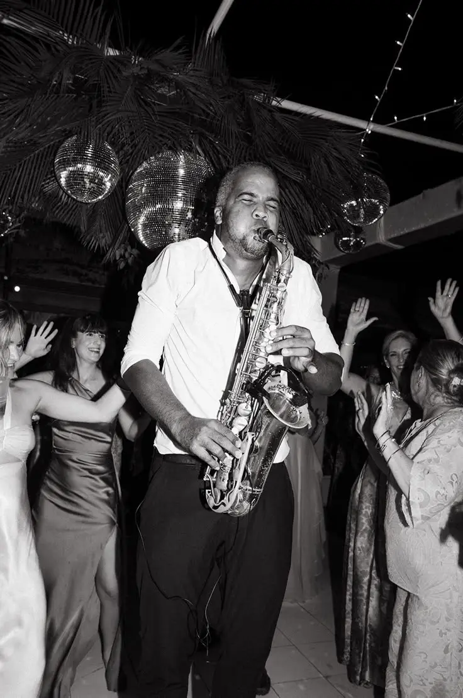
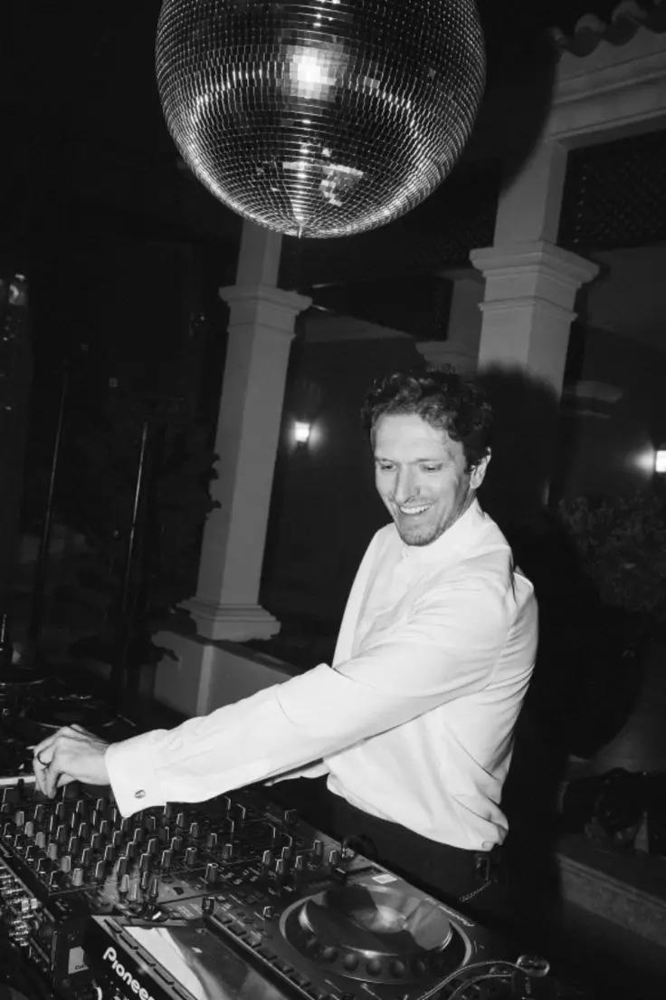
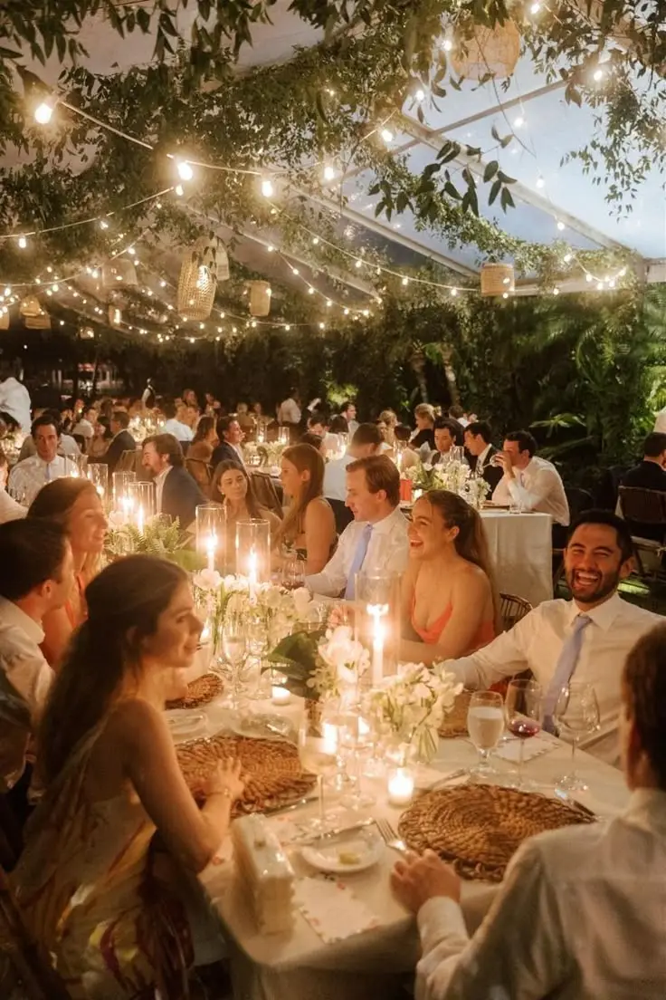
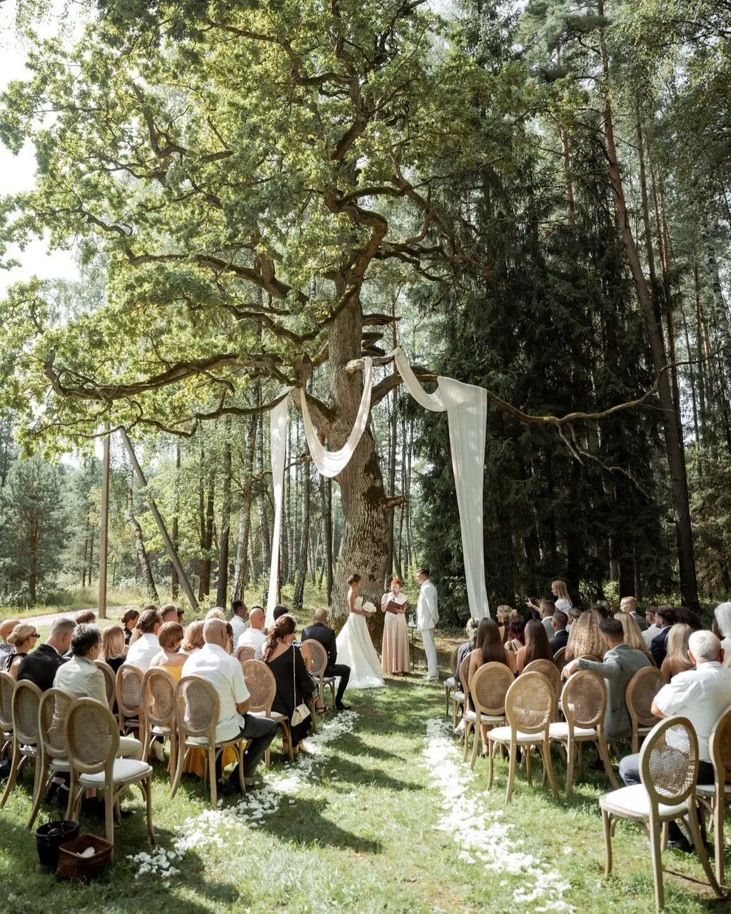
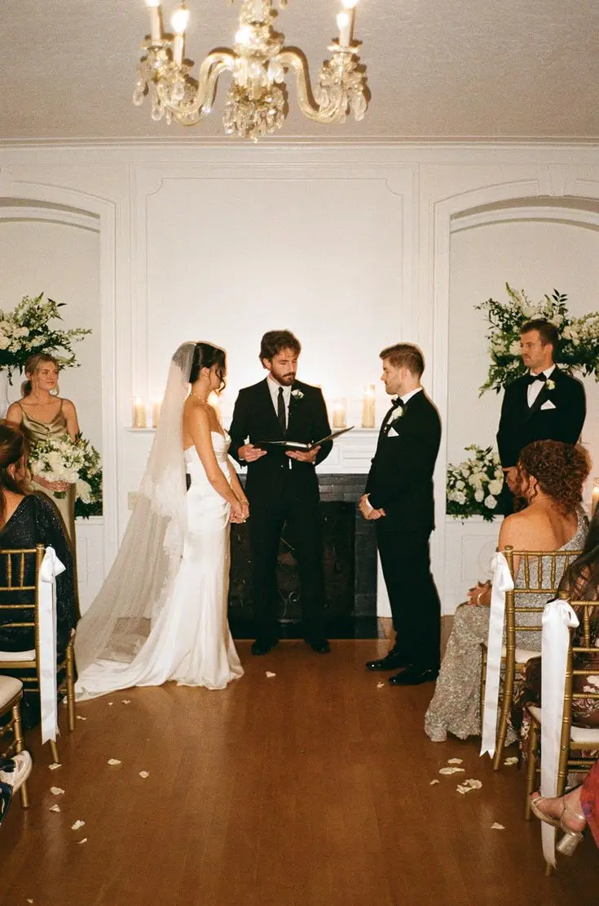
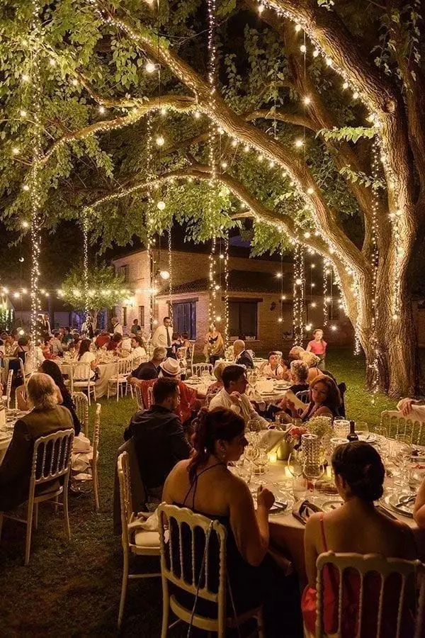

Organiser un mariage réussi, c’est aussi savoir anticiper l’imprévu. En tant que wedding planner en Nouvelle-Aquitaine, j’accompagne les futurs mariés à Bordeaux et dans toute la région bordelaise avec un objectif essentiel : mettre en place des plans B fiables, élégants et efficaces pour chaque étape importante de votre journée.
Météo capricieuse, problème technique, retard d’un prestataire ou imprévu logistique : rien ne doit perturber le bon déroulement de votre réception. Grâce à une organisation rigoureuse et à des solutions anticipées, chaque situation est maîtrisée pour garantir une expérience fluide, sereine et sans stress.
Découvrez une sélection complète des imprévus les plus fréquents lors d’un mariage, ainsi que des solutions concrètes et prêtes à l’emploi pour garder le contrôle et profiter pleinement de chaque instant.
1. Pluie ou météo défavorable : anticiper pour un mariage serein
La météo est l’un des principaux facteurs d’incertitude lors d’un mariage en extérieur. Une averse soudaine pendant la cérémonie laïque, un vent fort qui perturbe l’installation, une forte chaleur en été ou encore un orage au moment du vin d’honneur peuvent impacter le confort des invités et le bon déroulement de la journée. Pour garantir une organisation fluide et sans stress, il est essentiel d’anticiper chaque situation avec un plan B météo fiable et élégant.
La première étape consiste à prévoir systématiquement une solution de repli confirmée à l’avance. Cela peut être une tente de réception esthétique ou une salle intérieure disponible et validée par contrat. Un plan d’installation alternatif doit être préparé en amont afin que les prestataires puissent réagir rapidement en cas de changement de conditions. Pour préserver l’harmonie visuelle et le confort des invités, il est également recommandé de prévoir des parapluies blancs ou transparents ainsi qu’une signalétique claire si les espaces doivent être modifiés au dernier moment.
En tant que wedding planner, un suivi météo précis est réalisé à J-3 puis à J-1. Dans la région bordelaise, où le temps peut évoluer rapidement, cette anticipation permet de prendre une décision ferme sur l’activation du plan B. Cette organisation assure une transition fluide et vous permet de profiter pleinement de votre mariage, quelles que soient les conditions météorologiques.


2. Panne DJ ou problème technique : garder l’ambiance intacte
Lors d’un mariage, l’animation musicale est un élément central. Mais elle peut être compromise par une absence de DJ, une panne de matériel, une coupure d’électricité ou un micro défectueux pour les discours. Pour que la fête continue sans stress, il est indispensable de prévoir un plan B animation fiable.
Il est recommandé de préparer une playlist d’urgence sur téléphone avec une enceinte Bluetooth, de disposer d’un micro filaire de secours et, si le lieu est isolé, d’un groupe électrogène. Les coordonnées d’un DJ remplaçant doivent également être à portée de main. Pour une organisation optimale, je demande toujours à mon DJ à Bordeaux de prévoir un double ordinateur, une double clé USB et tout le matériel de secours nécessaire, afin d’éviter toute interruption de musique ou d’animations.
Au-delà du matériel, l’anticipation logistique joue un rôle essentiel. Une visite technique du lieu quelques semaines avant l’événement permet de vérifier la puissance électrique disponible, l’emplacement des prises, la compatibilité du système son et lumière, ainsi que les contraintes acoustiques (voisinage, limitation de décibels, horaires imposés). Cette étape réduit considérablement les risques de mauvaises surprises le jour J.
Il est également judicieux de répartir les responsabilités : un témoin ou un proche peut être désigné comme référent technique en cas d’imprévu. Ainsi, les mariés ne sont jamais sollicités directement et peuvent continuer à profiter pleinement de leur soirée. Une coordination fluide entre le DJ, le wedding planner et le responsable du lieu permet de réagir rapidement et discrètement en cas de souci.
Pour les discours et les moments clés (entrée des mariés, ouverture de bal, découpe du gâteau), il est conseillé de prévoir un test micro systématique avant chaque intervention. Un simple contrôle sonore de quelques secondes peut éviter un moment de flottement gênant.
Enfin, garder son calme est primordial. Les invités perçoivent l’énergie des organisateurs : si l’équipe reste sereine et réactive, l’ambiance ne sera pas impactée. Avec une préparation rigoureuse et des solutions de secours adaptées, même une panne technique peut devenir un simple contretemps… sans jamais entamer la magie de la fête.
3. Retard traiteur ou problème en cuisine : assurer un service fluide
Les imprévus liés à la réception peuvent survenir à tout moment : embouteillages vers Bordeaux, manque de personnel, plats servis en retard ou problèmes de cuisson. Pour y faire face, un plan B réception permet de maintenir le rythme et la qualité du service sans créer d’inquiétude chez les invités.
L’anticipation est essentielle : prévoir davantage de pièces pour le cocktail afin de prolonger agréablement l’apéritif, organiser une animation tampon comme un photobooth, un bar à vins ou un groupe live, et ajuster subtilement le timing de la soirée sans que cela ne soit perceptible. L’objectif est simple : transformer un éventuel retard en moment convivial supplémentaire.
Une bonne coordination entre le traiteur, le maître d’hôtel et le wedding planner permet également de fluidifier le service. Par exemple, il est possible de revoir l’ordre des interventions (discours, animation musicale, ouverture de bal) pour laisser à la cuisine le temps nécessaire, tout en conservant une dynamique harmonieuse. La communication interne doit rester discrète et efficace afin de préserver l’expérience invités.
En Nouvelle-Aquitaine, et particulièrement dans la région bordelaise, il est conseillé de prévoir une marge horaire supplémentaire durant la saison touristique, de mai à septembre. Les axes routiers autour de Bordeaux peuvent être fortement fréquentés, ce qui augmente les risques de retard logistique. Intégrer cette réalité dans le planning permet d’absorber plus sereinement tout imprévu.
Enfin, prévoir un petit stock de solutions de secours, plateaux froids supplémentaires, boissons déjà prêtes en chambre froide, personnel polyvalent, renforce la capacité d’adaptation de l’équipe. Avec une organisation flexible, une communication maîtrisée et une gestion proactive du timing, même un retard traiteur peut passer totalement inaperçu et garantir une réception élégante et parfaitement orchestrée.
4. Retards des mariés ou des invités : garder le timing sous contrôle
Même avec la meilleure organisation, des retards imprévus peuvent survenir. Les mariés ou certains invités peuvent être bloqués dans des embouteillages, confrontés à un souci de coiffure ou de maquillage, ou encore faire face à une cérémonie civile qui s’éternise. Ces décalages, parfois minimes, peuvent impacter l’ensemble du déroulé si rien n’a été anticipé.
Pour gérer ces situations, il est essentiel de prévoir un planning avec des marges de sécurité dès la conception du programme. Intégrer volontairement des temps “tampons” entre chaque grande étape (préparatifs, cérémonie, photos, vin d’honneur) permet d’absorber naturellement un éventuel retard sans effet domino sur la suite des festivités.
L’organisation d’un transport coordonné peut également limiter les risques : navettes pour les invités, chauffeur dédié pour les mariés, itinéraires vérifiés en amont et horaires de départ clairement communiqués. Lorsque la cérémonie civile a lieu en mairie, notamment dans une grande ville comme Bordeaux, il est prudent d’anticiper les contraintes de stationnement et la circulation aux heures de pointe.
Une communication fluide est tout aussi déterminante. Désigner un témoin référent ou un coordinateur chargé de centraliser les informations permet d’alerter rapidement les prestataires (photographe, traiteur, DJ, officiant) et d’ajuster discrètement le déroulement de la journée. Les mariés restent ainsi protégés du stress organisationnel.
Enfin, le vin d’honneur modulable constitue une excellente variable d’ajustement. Il peut être prolongé de 20 à 30 minutes si nécessaire, enrichi d’une animation musicale ou d’une activité conviviale afin que les invités ne perçoivent aucun décalage. L’essentiel est de conserver une dynamique harmonieuse et une ambiance sereine.
Avec une planification souple, une équipe réactive et une communication maîtrisée, même un retard peut être absorbé en toute élégance, garantissant une journée parfaitement orchestrée du début à la fin.



5. Problèmes logistiques du lieu de réception : anticiper pour une journée sans accroc
Les lieux de réception, qu’il s’agisse d’un château, d’un domaine viticole ou d’une propriété privée, peuvent présenter des contraintes logistiques imprévues. Coupure électrique, restriction sonore, accès difficile, manque de stationnement ou nombre insuffisant de sanitaires : autant d’éléments susceptibles de compliquer le déroulement de votre mariage si rien n’a été anticipé.
Dans des régions viticoles réputées comme Nouvelle-Aquitaine, et notamment autour de Bordeaux, de nombreux domaines sont situés en zone rurale. Cela implique parfois des routes étroites, un éclairage limité en soirée ou une capacité électrique restreinte. Une visite technique approfondie en amont permet d’identifier précisément ces points sensibles.
Pour prévenir toute coupure, la location d’un groupe électrogène adapté à la puissance nécessaire (DJ, traiteur, éclairage, chambre froide) constitue une sécurité essentielle. Il est également primordial de valider les horaires de musique avec le propriétaire du lieu et de vérifier les éventuelles limitations de décibels afin d’éviter toute interruption en pleine soirée.
L’accessibilité mérite une attention particulière : envoyer un plan d’accès détaillé, préciser les coordonnées GPS exactes et, si besoin, prévoir une signalétique temporaire le jour J facilitent l’arrivée des invités. Lorsque le stationnement est limité, la mise en place de navettes ou d’un voiturier peut fluidifier l’organisation.
Enfin, le confort des convives ne doit jamais être négligé. Si les installations existantes sont insuffisantes, la location de sanitaires supplémentaires haut de gamme garantit une expérience agréable tout au long de l’événement. De même, prévoir un éclairage extérieur sécurisé pour les déplacements nocturnes contribue à la sérénité générale.
Avec une analyse logistique rigoureuse, des solutions de secours adaptées et une coordination efficace entre les prestataires et le lieu, chaque contrainte peut être maîtrisée. L’anticipation reste la clé pour transformer un site de caractère en cadre parfaitement fonctionnel, assurant ainsi une journée fluide et sans accroc.

Pourquoi prévoir un plan B change tout
Un mariage parfaitement orchestré n’est pas un mariage sans imprévus. Au contraire, même le mariage le mieux préparé peut rencontrer des situations inattendues : une pluie soudaine, un retard de prestataire, un problème technique ou un imprévu logistique. La différence entre un événement chaotique et une journée fluide réside dans l’anticipation et la préparation de solutions concrètes. Avec un plan B réfléchi, chaque scénario critique est maîtrisé avant même qu’il ne se produise, permettant à votre mariage de rester élégant et harmonieux, quelles que soient les circonstances.
En tant que wedding planner, mon rôle dépasse la simple organisation. Je prends en charge l’anticipation de chaque scénario critique, la coordination minutieuse de tous les prestataires, et la gestion proactive des imprévus. Cela signifie que vous pouvez vous concentrer sur l’essentiel : profiter de votre journée, partager des moments précieux avec vos proches et célébrer votre amour sans stress ni souci logistique.
Prévoir un plan B, c’est aussi protéger votre sérénité. Savoir qu’une solution est déjà en place pour chaque problème potentiel vous permet de rester détendu et de profiter pleinement de chaque instant. Cela garantit une journée fluide et harmonieuse, où les transitions se font en douceur et où chaque détail, du vin d’honneur à la soirée dansante, est parfaitement orchestré.
En résumé, un mariage avec plan B n’est pas seulement une question de précaution, c’est une garantie de sérénité, d’élégance et de plaisir pour vous et vos invités. C’est cette préparation en amont qui transforme un événement stressant en une expérience mémorable et parfaitement réussie.
Téléchargez votre Kit Plan B Mariage (version imprimable)
Pour vous aider à anticiper chaque imprévu et profiter pleinement de votre journée, je mets à disposition des futurs mariés un Kit Plan B Mariage complet et prêt à utiliser.
En tant que wedding planner expérimentée, je vous accompagne dans la préparation de mariages élégants, maîtrisés et sereins, avec toutes les solutions concrètes pour gérer l’imprévu. Ce kit est conçu pour vous offrir tranquillité d’esprit et contrôle total sur votre journée, que vous soyez au début de votre organisation ou en plein préparatifs.
Téléchargez-le dès maintenant et transformez l’anticipation des imprévus en un véritable atout pour votre mariage.
En Bref...
Prévoir un plan B pour votre mariage n’est pas un signe d’inquiétude, mais une marque d’anticipation et de professionnalisme. Chaque imprévu, qu’il soit météorologique, technique ou logistique, peut être transformé en situation maîtrisée grâce à une organisation réfléchie et des solutions concrètes.
En tant que wedding planner, mon rôle est de vous offrir sérénité, fluidité et élégance à chaque étape de votre journée. Avec des plans d’urgence prêts à l’emploi, une coordination efficace des prestataires et des alternatives anticipées, votre mariage devient une expérience agréable et mémorable, sans stress ni imprévus visibles.
Anticiper, préparer et planifier, c’est la clé pour profiter pleinement de votre célébration et créer des souvenirs inoubliables, en toute tranquillité. Avec un plan B solide, vous êtes assuré que chaque instant restera parfait, quelle que soit la situation.
Lovely Day Event c'est plusieurs types de prestations
L'organisation de mariage
Je vais intervenir sur toutes les étapes de vos préparatifs et vous guider dans vos choix. Je suis force de proposition pour que votre mariage ne ressemble qu’à vous.
Coordination le jour J
Je serai le chef d'orchestre pour gérer les différents prestataires, la mise en place de votre décoration et le déroulement de cette belle journée.
Décoration de mariage
Créative et passionnée, je suis certifiée Wedding Designer et je conçois une ambiance scénographique qui correspond au thème de votre mariage. La décoration est comprise dans la formule Signature, ou proposée en option avec la coordination du jour J.